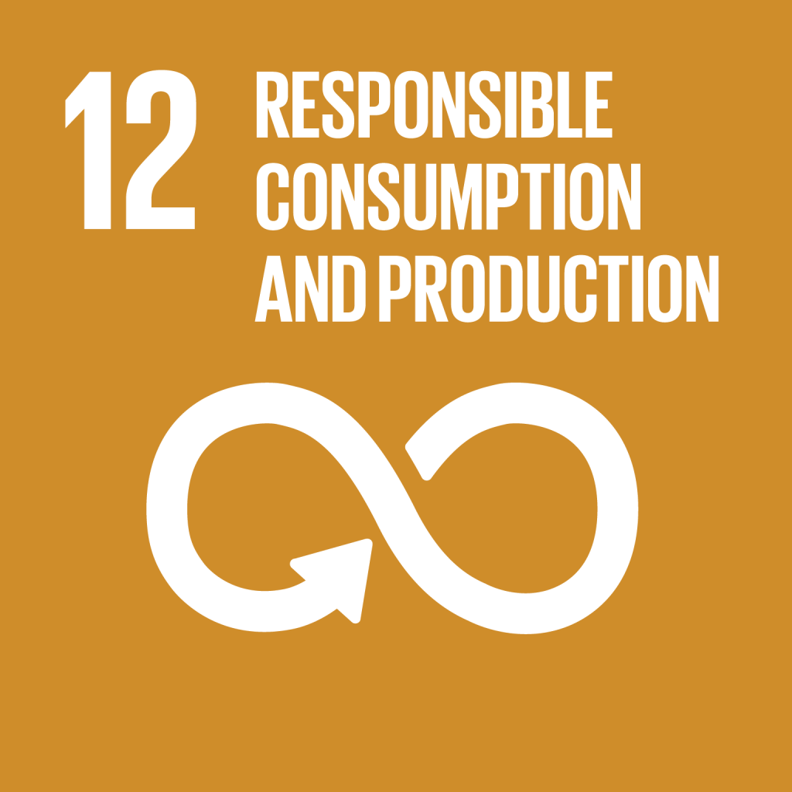
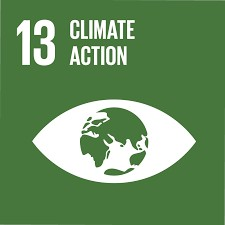
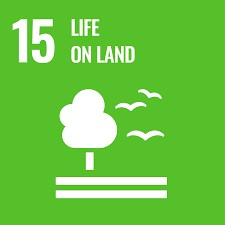

On this website, let us discuss something that you might have used countless times and not even given thought to, which are tiny plastic sachets. We all have a drawer of those little sachets of shampoo, ketchup, or coffee, especially if they are necessities. Well, what if I told you they’re putting our environment in such a mess! Small as they are, these single-use sachets have a huge impact. They’re poisoning our oceans, filling our landfills, and even harming wildlife. Today, we will take a deeper dive into how these sachets tie the Sustainable Development Goals together as well as how we need to rethink their use.
SDGs

SDG 12: Responsible Consumption
Single-use sachets are a prime example of what we don't want to be doing when it comes to responsible consumption. These single-use sachets are intended to be used once and thrown away, resulting in millions of them ending up in the trash each day. SDG 12 tells us to think twice about what we purchase and twice as much about the waste we create. One step towards more sustainable living is reducing our reliance on sachets.

SDG 13: Protect the Planet
Making and disposing of sachets might seem harmless, but they contribute to climate change. Plastic sachets need fossil fuels for the production process, and emitting them are harmful greenhouse gases when burned or letting them decompose. We need to stop using single-use plastics and find good alternatives to that.

SDG 15: Life on Land
Often the sachets are disposed of improperly, littering our landscapes and harming wildlife. But they can also be mistaken for food by animals, which can in turn lead to blockages of their digestive systems, or these plastics break down into microplastics that end up infiltrating soil and water systems. Protecting life on land means we need to package products better without jeopardizing our ecosystems.
Conclusion
So, the next time you reach for a sachet, remember that it’s not just a nice little sachet, as it is way more than that. It is part of a big environmental problem centered around plastics and packaging. We can support alternatives to help reduce the unnecessary amount of single-use plastics and take steps towards a more eco-friendly future for our planet. Every small change counts!
CALL TO ACTION
If you loved this article, put your information to subscribe for more updates: